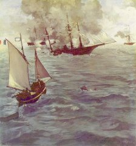
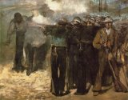
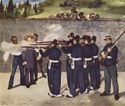
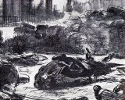
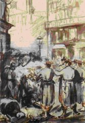
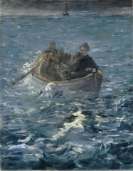
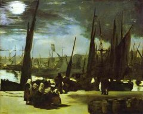
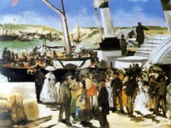
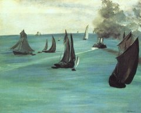

- Home
- Première années
- Les débuts
- Les défis
- Modernité
- Peintures historiques
- Cafés-concerts
- Natures mortes
- Œuvres
Édouard Manet
Peintures historiques
Le Combat du Kearsarge et de l'Alabama

Le Combat du Kearsarge et de l'Alabama, 1864, Philadelphia Museum of Art.
La peinture historique, en raison de son caractère très académique, reste un genre marginal dans l’œuvre de Manet, quelques événements contemporains importants ont pourtant retenu son intérêt. C'est ainsi que le peintre immortalise en 1865 une bataille navale de la guerre de Sécession qui s'est déroulée au large de Cherbourg le 19 juin 1864 , entre le navire fédéral Kearsarge et le bâtiment confédéré Alabama: Le Combat du Kearsarge et de l'Alabama (134 × 127 cm). En 1872, Barbey d'Aurevilly affirme « Le tableau de Manet est avant tout une magnifique marine » soulignant que « la mer qu'il gonfle alentour est plus terrible que le combat ». Le tableau exposé chez Alfred Cadart reçoit les éloges du critique Philippe Burty.
Manet réalise la même année plusieurs toiles sur le thème du Kearsarge et sur le thème des bateaux de pêche qui témoignent des activités maritimes de l'époque : L'arrivée à Boulogne du Kearsarge( 1864), Le Steam-boat, marine ou Vue de mer, temps calme (1864-1865), La jetée de Boulogne (1869) ou des portraits de membres de son équipage (Pierrot ivre, aquarelle qui caricaturerait le pilotin Pontillon, futur époux d'Edma Morisot, sœur de la peintre Berthe Morisot avec qui Manet se lie d'amitié).
L'Exécution de Maximilien

L'Exécution de Maximilien, première version 1867, musée de Boston

L'Exécution de Maximilien, 1868, version définitive, Kunsthalle de Mannheim.
Manet était encore à vif depuis l'insuccès de son exposition à l'Alma lorsque le 19 juin 1867, et alors même que l'Exposition universelle n’est pas terminée, la nouvelle de l’exécution de Maximilien de Habsbourg, au Mexique, parvient jusqu’à la capitale française. Édouard Manet, depuis toujours fervent républicain, est scandalisé par la manière dont Napoléon III , après avoir imposé l'instauration de Maximilien au Mexique, lui a retiré le soutien des troupes françaises. Le peintre travaille plus d’une année à une grande toile commémorative et historique, de l'été 1867 à la fin 1868.
Il réalise plusieurs versions du même sujet. La première est au musée de Boston, des fragments de la deuxième sont rassemblés à la National Gallery de Londres, l'esquisse définitive est à la Ny Carlsberg Glyptotek de Copenhague, la composition finale, au musée de Mannheim.
« La version de Boston est d'ailleurs la plus proche de Goya, par l'esprit romantique qui l'anime et par les tons chauds, qu'une harmonie froide de gris, de verts et de noirs remplacera dans les versions suivantes. Alors que Goya saisissait le moment où les soldats mettent en joue, Manet, lui, fixe le coup de feu. Cette version serait le laboratoire primitif de la composition. »
Inspirée du Tres de Mayo de Goya, et cependant traitée d’une manière radicalement différente, la scène de L'Exécution de Maximilien satisfait Manet qui l'aurait sans doute proposée au salon si on ne lui avait pas fait savoir à l'avance qu'il serait refusé. Mais le tableau, connu dans le milieu artistique, fera des émules notamment avec Gérôme et son Exécution du maréchal Ney. « Avec sa séquence des Exécutions, Manet est un exemple du dernier effort pour recréer la grande peinture d'histoire. Il faut attendre Guernica de Picasso (1937), et plus clairement les Massacres de Corée pour voir relevé le défi de Manet, défi que Manet avait lui même lancé à Goya et à la grande tradition. »
Exposé aux États-Unis par l'amie du peintre, la cantatrice Émilie Ambre au cours de ses tournées en 1879 et 1880, le tableau n'aura qu'un succès relatif. Le triomphe de l'Impressionnisme refoulera pour un moment l'ambition de peindre les grands évènements du temps.
La Commune de Paris - Manet républicain

Guerre civile, lithographie

La Barricade,répression de la Commune de Paris, lithographie

L'Évasion de Rochefort, 1881 (143 x 114 cm), Kunsthaus, Zurich.
Républicain convaincu, Manet s'engage dans la Garde Nationale au moment de la Guerre de 1870 en même temps que Degas sous les ordre du peintre Meissonier qui est colonel. Après la capitulation, il séjourne à Bordeaux avant de retrouver Paris où son atelier de la rue Guyot a été détruit. Les derniers soubresauts de la Commune déchirent Paris, et Manet, qu'elle a élu à sa Fédération des peintres et sculpteurs se désolidarise de ses excès. Toutefois, il regarde avec horreur le caractère sauvage de la répression et l'exprime dans deux lithographies La barricade (1871-1873 (Museum of Fine Arts Boston) où les fusilleurs dessinés de dos évoquent l'exécution de Maximilien ou Guerre civile (1871, un tirage de 1874 est conservé à Bibliothèque Nationale de France) dans laquelle Manet reprend en l'inversant l'image du Torero mort dans le dessin d'un corps allongé au pied d’une barricade désertée et la charge émotive de l’œuvre est renforcée encore « par un cadrage serré, l’artiste concentre l’attention du spectateur sur ce gisant dont la solitude dit l’ineptie de la répression rapide et sauvage. »
Manet est comme ses contemporains frappé par l'aventure d'Henri Rochefort qui, déporté en Nouvelle Calédonie, après la Commune, s'évade en 1874 et rejoint l'Australie sur une petite baleinière. Républicain mais prudent, « l'artiste a attendu le triomphe des Républicains au Sénat et à la Chambre, en janvier 1879, ainsi que le vote d'une loi d'amnistie des communards en juillet 1880 autorisant le retour en France de l'évadé pour s'attaquer au sujet ». Manet, alors malade, a demandé à rencontrer Rochefort pour obtenir des détails sur l'aventure, et le 4 décembre 1880, il écrit à Stéphane Mallarmé :
« J'ai vu Rochefort hier, l'embarcation qui leur a servi était une baleinière de couleur gris foncé; six personnes, deux avirons. Amitiés. »
C'est à partir des récits de Rochefort qu'il compose deux tableaux intitulés L'Évasion de Rochefort dont l'un, où les personnages sont plus précis, est conservé au musée d'Orsay à Paris, l'autre étant au Kunsthaus de Zurich. Dès le mois de janvier suivant, en 1881, Manet exécute un portrait d'Henri Rochefort grandeur nature, actuellement conservé au musée de Hambourg.
Un peu auparavant (en 1879-1880) il avait réalisé le portrait de Georges Clemenceau, alors député radical de Montmartre, lié à Eugène Manet, frère du peintre, conseiller municipal de La Chapelle (1878-1881),dans le 18e arrondissement de Paris, fief électoral de Clemenceau.
L'univers de la mer

Clair de lune sur le port de Boulogne, 1869, Musée d'Orsay, Paris.
À partir de 1868, les Manet ont pris l’habitude de passer leurs étés à Boulogne-sur-Mer, dans le Pas-de-Calais, où ils ont fait l’acquisition d’un appartement. Outre le Déjeuner dans l'atelier, ces séjours répétés permettent à Édouard Manet de développer un genre qui l’a toujours beaucoup attiré : les marines et l’univers de la mer. Boulogne, important port de pêche, constitue alors une source d’inspiration inépuisable pour un peintre aimant les sujets naturalistes.
Le saisissant Clair de lune sur le port de Boulogne, dépeint le retour d’un bateau de pêche à la nuit tombée et l’attente des femmes de marins, sous la lumière de la lune. De cette scène ordinaire, Manet fait un clair-obscur mystérieux et dramatique, probablement inspiré des paysages nocturnes flamands et hollandais du xviie siècle ou des marines au clair de lune de Vernet. Il est possible aussi que Manet ait été inspiré par un petit format de Van der Neer qu'il possédait et qu'il proposa à une vente avant de le retirer. Une cinquantaine d'œuvres de Van der Neer sur des thèmes analogues ont été vendues à Paris entre 1860 et 1880.

Le Départ du vapeur de Folkestone, 1869, Philadelphia Museum of Art.
Les vacances boulonnaises voient la naissance d’autres toiles importantes, en particulier le Départ du vapeur de Folkestone, en 1869 : Manet y représente le bateau à aube assurant la liaison avec le port anglais de Folkestone, et sur lequel le peintre avait d’ailleurs embarqué l’année précédente pour visiter Londres. La dame habillée de blanc située le plus à gauche de la composition serait Suzanne Manet, accompagnée de son fils Léon. La toile, à l'inverse du Clair de Lune, est l'un des exemples les plus saisissants de la manière dont Manet sait jouer avec la lumière et les couleurs. Le Bateau goudronné, a été peint sur la plage de Berck, et prend pour thème le travail des pêcheurs.
La jetée de Boulogne est également le sujet de plusieurs œuvres appartenant pour la plupart à des collectionneurs privés à l'exception d'une d'entre elles conservée au musée Van Gogh d'Amsterdam et intitulées à peu près toutes Jetée de Boulogne.

Vue de mer, temps calme, 1864, Art Institute of Chicago
Manet reviendra en 1872-1873 sur le thème des bateaux avec une toile actuellement conservée au Musée d'art moderne André-Malraux, (Le Havre). L'œuvre intitulée Bateaux en mer. Soleil couchant, d'un format réduit, assez insolite pour une marine, a sans doute été réalisée au cours d'un des séjours du peintre à Berck-sur-mer. Peu après, Claude Monet présentait à l'exposition de 1874 deux tableaux intitulés Impression soleil levant et Impression soleil couchant qui donnait le « coup d'envoi » du mouvement impressionniste auquel il a donné son nom.